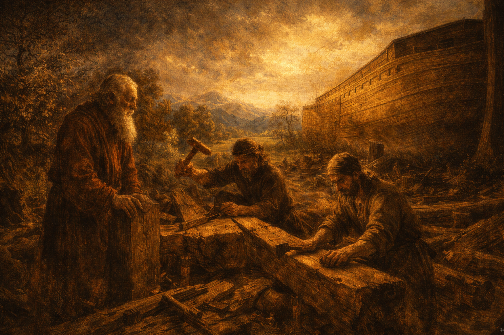

Conditions in Noah's Day:
Discussion: What parallels do you see between Noah's day and our own? What similarities concern you most?
Let's Read: Moses 8:27
Hebrew: חֵן (chen)
Favor • Acceptance • Beauty • Elegance • Divine pleasure
Not just "unmerited favor"—God's enabling power to become what we cannot become alone
See 2 Nephi 25:23; Moroni 10:32
How can someone be "perfect" and still need grace? What does this teach us?
When have you felt God's enabling power (grace) sustain you in difficult circumstances?

God's Long-Suffering Mercy:
What does the 120-year warning period teach us about God's character and His desire to save?
Modern Application:
President Nelson has been preparing us for the Second Coming since 2018. What warnings and invitations has he extended to help us prepare?
Two-Fold Mercy:
How was the Flood an act of mercy—both for those living AND for unborn spirits?
Let's Read: Genesis 9:12-17
The Rainbow Covenant:
Why does God give us visible, physical tokens rather than just spiritual promises?
When you see a rainbow, what do you feel or remember now?
Ancient Token:
Our Covenant Tokens:
Which covenant token is most meaningful to you right now? Why?
How do physical reminders strengthen spiritual memory?
What can we do to make these tokens more powerful in our daily lives?
Noah as Prophet-Type:
"A perfect and loving Father in Heaven has chosen the pattern of revealing truth to His children through a prophet."
How is President Oaks like Noah? What is he warning us about?
What is one prophetic invitation you're working to follow right now?
"And Noah found grace in the eyes of the Lord...Noah was a just man and perfect in his generation, and he walked with God."
— Moses 8:27
As You Leave Today:
What is one way you will seek grace this week?
What covenant token will you use to remember?